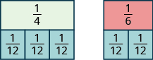
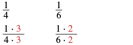
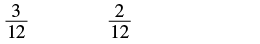
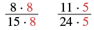
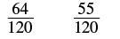

লঘিষ্ঠ সাধারণ হরযুক্ত সমতুল ভগ্নাংশে রূপান্তর
উৎস-অনুগত উপবিভাগ · m81289-fs-id1920865। সম্পূর্ণ বইয়ের অনুবাদ এখনও চলছে। গাণিতিক চিহ্ন, সংখ্যা ও মূল কাঠামো অক্ষুণ্ণ; প্রযোজ্য ক্ষেত্রে সূত্রের শব্দলেবেল বাংলায় অনূদিত। মূল ছবির ভিতরের ইংরেজি লেবেলের অর্থ বাংলা বিবরণে আছে। স্বাধীন শিক্ষক ও ভাষা-পর্যালোচনা বাকি। অন্য উপবিভাগের উৎস-লিঙ্কে ইন্টারনেট প্রয়োজন।
লঘিষ্ঠ সাধারণ হরযুক্ত সমতুল ভগ্নাংশে রূপান্তর
আগে ভগ্নাংশের মডেলে টুকরো সাজিয়ে দেখেছি, এবং -এর লঘিষ্ঠ সাধারণ হর একই গোটা বস্তুর অংশের তিনটি টুকরো মিলে ঠিক ঢেকে দেয় অংশের টুকরোকে। আবার অংশের দুটি টুকরো দিয়ে ঠিক ঢাকা যায় গোটা বস্তুর এই অংশটিকে: তাই

বাঁ দিকে এক-চতুর্থাংশ লেখা একটি আয়তাকার টুকরো। তার ঠিক নীচে সমান মোট দৈর্ঘ্য জুড়ে তিনটি এক-দ্বাদশাংশের টুকরো। ডান দিকে এক-ষষ্ঠাংশ লেখা একটি টুকরোর নীচে সমান মোট দৈর্ঘ্য জুড়ে দুটি এক-দ্বাদশাংশের টুকরো। তাই এক-চতুর্থাংশের সমান তিন-দ্বাদশাংশ এবং এক-ষষ্ঠাংশের সমান দুই-দ্বাদশাংশ।
আমরা বলি, ও সমতুল ভগ্নাংশ; একইভাবে ও সমতুল ভগ্নাংশ।
সমতুল ভগ্নাংশের ধর্ম ব্যবহার করে আমরা বীজগাণিতিক পদ্ধতিতে একটি ভগ্নাংশকে তার সমতুল ভগ্নাংশে রূপান্তর করতে পারি। মনে রাখো, দুটি ভগ্নাংশের মান একই হলে তারা সমতুল। সুবিধার জন্য সমতুল ভগ্নাংশের ধর্মটি আবার দেওয়া হলো।
ভিন্ন হরযুক্ত ভগ্নাংশ যোগ বা বিয়োগ করতে প্রথমে প্রতিটি ভগ্নাংশকে লঘিষ্ঠ সাধারণ হরযুক্ত একটি সমতুল ভগ্নাংশে রূপান্তর করতে হবে। এবার মডেল ব্যবহার না করে ও ভগ্নাংশ দুটিকে সমতুল ভগ্নাংশে রূপান্তর করি, যাদের হর হবে ।
অনুশীলন · এই প্রশ্নের লিঙ্ক
ও ভগ্নাংশ দুটিকে এমন সমতুল ভগ্নাংশে রূপান্তর করো, যাদের হর হবে অর্থাৎ ভগ্নাংশ দুটির লঘিষ্ঠ সাধারণ হর।
সমাধান
| লঘিষ্ঠ সাধারণ হর নির্ণয় করো। | ও -এর লঘিষ্ঠ সাধারণ হর 12। |
| 4-কে কত দিয়ে গুণ করলে 12 হয়, তা নির্ণয় করো। | 4 গুণ 3 সমান 12। গুণক 3 লাল রঙে দেখানো। |
| 6-কে কত দিয়ে গুণ করলে 12 হয়, তা নির্ণয় করো। | 6 গুণ 2 সমান 12। গুণক 2 লাল রঙে দেখানো। |
| সমতুল ভগ্নাংশের ধর্ম ব্যবহার করে প্রতিটি ভগ্নাংশকে লঘিষ্ঠ সাধারণ হরযুক্ত সমতুল ভগ্নাংশে রূপান্তর করো। প্রত্যেক ভগ্নাংশের লব ও হরকে একই সংখ্যা দিয়ে গুণ করো। |  বাঁ দিকে 1/4-এর নীচে লবে 1 গুণ 3 এবং হরে 4 গুণ 3 লেখা। ডান দিকে 1/6-এর নীচে লবে 1 গুণ 2 এবং হরে 6 গুণ 2 লেখা। একই ভগ্নাংশের লব ও হর একই গুণক দিয়ে গুণ করা হয়েছে; গুণকগুলি লাল রঙে। |
| লব ও হরের গুণগুলি হিসাব করো। |  বাঁ দিকের ভগ্নাংশের লব ৩, হর ১২; ডান দিকের ভগ্নাংশের লব ২, হর ১২। দুটি ভগ্নাংশের হরই ১২। |
পাওয়া ভগ্নাংশগুলিকে আবার লঘিষ্ঠ আকারে নিয়ে যাবে না। তা করলে আমরা মূল ভগ্নাংশগুলিতেই ফিরে যাব, আর একই হর থাকবে না। এখানে লব ও হরের গুণগুলি হিসাব করে লঘিষ্ঠ সাধারণ হরটি বজায় রাখাই উদ্দেশ্য।
অনুশীলন · এই প্রশ্নের লিঙ্ক
ও ভগ্নাংশ দুটিকে এমন সমতুল ভগ্নাংশে রূপান্তর করো, যাদের হর হবে অর্থাৎ ভগ্নাংশ দুটির লঘিষ্ঠ সাধারণ হর।
সমাধান
| লঘিষ্ঠ সাধারণ হর 120 দেওয়া আছে। আমরা দ্বিতীয় ধাপ থেকে শুরু করব। | |
| 15-কে কত দিয়ে গুণ করলে 120 হয়, তা নির্ণয় করো। | 15 গুণ 8 সমান 120। গুণক 8 লাল রঙে দেখানো। |
| 24-কে কত দিয়ে গুণ করলে 120 হয়, তা নির্ণয় করো। | 24 গুণ 5 সমান 120। গুণক 5 লাল রঙে দেখানো। |
| সমতুল ভগ্নাংশের ধর্ম ব্যবহার করো। |  বাঁ দিকে লবে 8 গুণ 8 এবং হরে 15 গুণ 8; ডান দিকে লবে 11 গুণ 5 এবং হরে 24 গুণ 5। প্রথম ভগ্নাংশের একই গুণক 8 এবং দ্বিতীয় ভগ্নাংশের একই গুণক 5 লাল রঙে দেখানো। |
| লব ও হরের গুণগুলি হিসাব করো। |  বাঁ দিকের ভগ্নাংশের লব ৬৪, হর ১২০; ডান দিকের ভগ্নাংশের লব ৫৫, হর ১২০। দুটি ভগ্নাংশের হরই ১২০। |